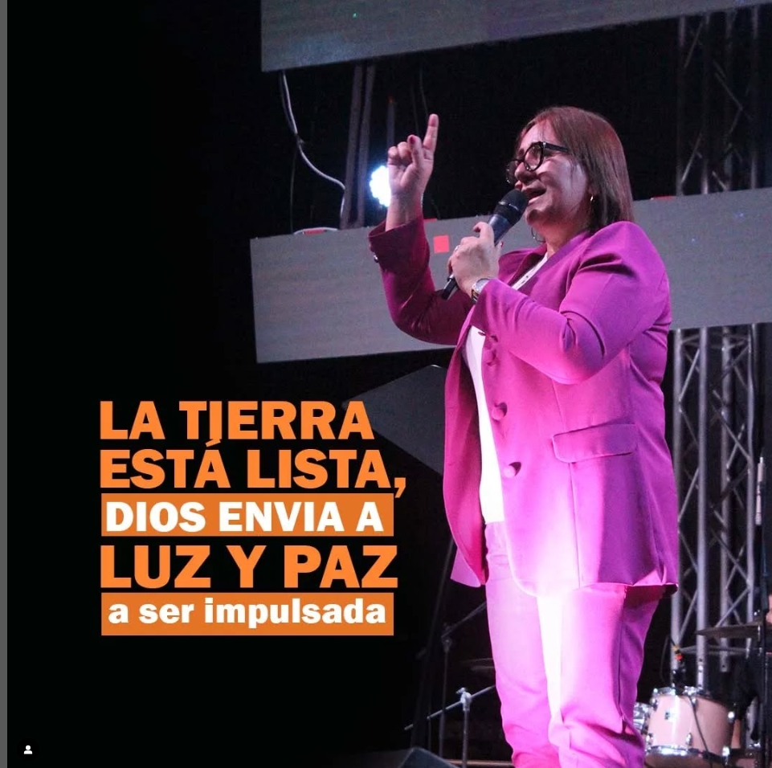

¡Bienvenido al Consejo de Iglesias!
Luz y Paz “Casa con diseño familiar”.
Líderes Espirituales
Pastor Jesús Jiménez
Líder espiritual con más de 20 años guiando nuestra comunidad.

Pastora Maritha de Jiménez
Misionera y pastora con gran vocación al servicio de Dios.
Estadísticas de Sedes
Total de Sedes
0
Sedes Nacionales
0
Sedes Internacionales
0
Nuestra Historia
Fundada en 1993, Concejo Mundial de las Iglesias nació en Morón, con la visión de ser un faro de fe y esperanza para la comunidad. Desde sus inicios, ha crecido en número y espíritu, ofreciendo un espacio de encuentro, oración y ayuda solidaria. A lo largo de los años, ha sido testigo de innumerables historias de transformación y fe, convirtiéndose en un pilar para quienes buscan fortaleza espiritual. Hoy, sigue expandiendo su misión con actividades comunitarias, encuentros de oración y un fuerte compromiso con el bienestar de su gente.
Por si no los viste
Luz y Paz en YouTube